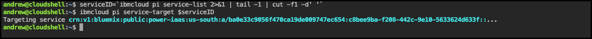
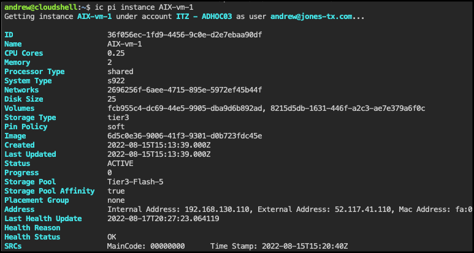

Command line exercises
In this exercise, explore several of the PowerVS CLIs. It is important to remember you are using a shared environment and have limited administrative permissions. The CLIs being executed here are command that only require "read" access to the environment. CLIs also exist to create and modify the PowerVS resources, you will just not have sufficient permissions to execute those commands in the shared environment. Attempting to do so will result in an error.
For this exercise, the IBM Cloud Shell will be used. IBM Cloud Shell gives users complete control of their cloud resources, applications and infrastructure, from any web browser. IBM Cloud Shell provides pre-authenticated access to the latest tools and programming languages for cloud-based development, deployment and management of services and applications — all in a secure shell. IBM Cloud Shell is instantly accessible from the IBM Cloud portal. The IBM command line interface (CLI) along with all the IBM Cloud CLI plugins are pre-installed in IBM Cloud Shell, including the PowerVS CLIs.
It is also possible to install the IBM Cloud CLIs and PowerVS CLI plugin other systems, like personal desktops, development servers, etc. To learn more about installing the PowerVS CLI locally click here.
To get started, first open the IBM Cloud Shell from the IBM Cloud portal:
- If not already opened, open the IBM Cloud Portal: https://cloud.ibm.com/ and authenticate with your IBM Cloud credentials.
- Change from your IBM Cloud account to the 2305900 - ITZ - ADHOC03 account.

Tip
If your browser window is narrow, you may see this icon:  instead of the current account name as shown in the screen capture above.
instead of the current account name as shown in the screen capture above.
- Click the IBM Cloud Shell icon
 .
.

The next steps are performed in using the IBM Cloud Shell window that was opened.
First, create a SSH private key file using the key provided in your IBM Technology Zone's reservation welcome e-mail.
Remember, to avoid typographical errors copy the command line using the  icon when it is available. Then paste the contents into the IBM Cloud Shell using Ctrl+v, Cmd+v, or right click and select paste at the prompt in the IBM Cloud Shell.
icon when it is available. Then paste the contents into the IBM Cloud Shell using Ctrl+v, Cmd+v, or right click and select paste at the prompt in the IBM Cloud Shell.
- Display all the PowerVS plugin command line options.
Tip for novice Linux users!
If you are not familiar with Linux commands, don't worry. The command you just ran is actually 2 commands. The first is ibmcloud pi --help. This executes the help option of the PowerVS plugin. The second command is the more command which pauses the output being displayed. The "|" or pipe character takes the output from the first command and sends it as input to the second command. If you want to learn more about Linux commands, just do a Internet search on Linux primer.
- Press the space bar to continue the output.
Notice the last part of the message says: Enter 'ibmcloud pi help [command]' for more information about a command. Use this to get more help on individual PowerVS plugin commands.
- List all the PowerVS services provisioned in the account.
Sample output

To view the PowerVS instances in the service, the service target must first be set for the PowerVS plugin.
- Set the service target using the instance ID of the service.
Tip for novice Linux users!
The last command did 4 actions. First, it listed the service list like in step 6 and redirected both the error and standard output to the standard output stream (2>&1). This output was then sent to the tail command which ignores everything but the last line (-1). Then the output from the tail command is sent to the cut command where all the output except the first field up to to the first space character is ignored (-f -d' '). And finally, the output from the cut command was stored in an environment variable called serviceID. Why did we do this? Because no one wants to type crn:v1:bluemix:public:power-iaas:us-south:a/ba0e33c9056f470ca19de009747ec654:c8bee9ba-f208-442c-9e10-5633624d633f:: in order to run the next command.
- Use the $serviceID environment variable to set the target of future PowerVS plugin commands to the service.
Sample output

- List all the PowerVS instances provisioned in the targeted PowerVS service.
Sample output
- View the details of the AIX-vm-1 instance.
Sample output

Thus far, all of these commands have been read commands. The PowerVS CLIs also support create and update commands, but remember your user ID has limited access. Try the instance modify command and see what happens.
- Restart the RH-vm-1 instance.
Sample output
 Note, this error message as nowhere near as informative as what you saw in the IBM Cloud portal when attempting an action your user ID does not have permission to perform. The product team has been notified, and hopefully in the near future the CLI error messages will improve.
Note, this error message as nowhere near as informative as what you saw in the IBM Cloud portal when attempting an action your user ID does not have permission to perform. The product team has been notified, and hopefully in the near future the CLI error messages will improve.
There are over 100 PowerVS CLIs. Feel free to explore these using your TechZone environment. Remember, use ibmcloud pi --help or ibmcloud pi <command> --help to get detailed information on a command's usage.
That concludes the final Part of the IBM Power Systems Virtual Server demonstration script. Proceed to Part 8 - Next steps for more information on completing the IBM Power Systems Virtual Server - Level 3 badge.
combined.pdf